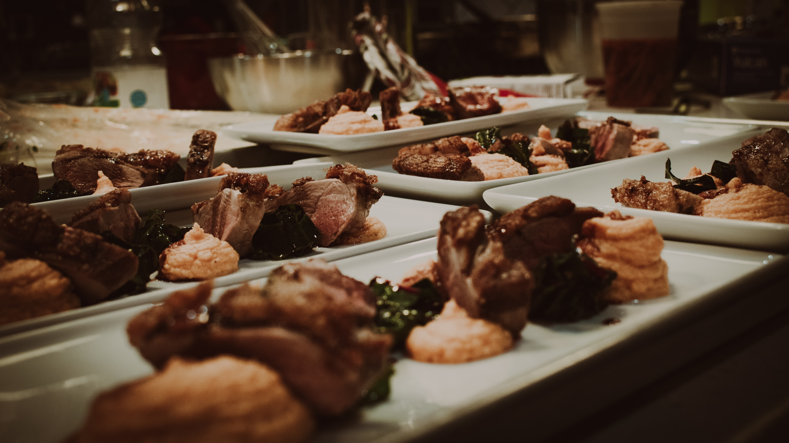

Duck Course

Description:
This course, was created as part of a multi-course tasting menu. The dish
features seared duck breast, a grilled swiss chard salad, and a wonderful
yam puree.
Ingredients:
- Duck Breast
- Swiss Chard
- Yams
- Fish Sauce
- Heavy Whipping Cream
- Balsamic Vinegar
- Pomegranate juice
- Olive Oil
- Salt & Pepper
Steps:
- Peel and dice yams
-
Toss into boiling water and cook until easily pierced with a fork,
remove
-
Puree in a food processor with heavy whipping cream, and season with
salt and pepper. Set aside
- Heat a pan over medium high heat
-
Begin preparing the duck breast by scoring the skin in a hatch pattern
- Season liberally with salt and pepper
-
Once pan is up to temp, place the duck skin side down (do not touch the
duck for a few minutes, in order to let the skin form a crust)
- Begin to heat up the grill pan, or a full size grill
-
Place leaves of swiss chard on the grill, until a char begins to appear,
remove
- Slice the leaves length wise to remove the stems
- Then slice into bit sized pieces
-
Flip the duck and let sear on the other side until internal temp
registers 145º
-
In a separate pan reduce pomegranate juice, along with fish sauce, until
thickened
-
Remove duck from the pan, and slice into strips against the grain of the
meat
-
Begin to plate, placing a spoon full of puree on the plate, along with
swiss chard salad, and a few slices of duck, spoon sauce over the duck